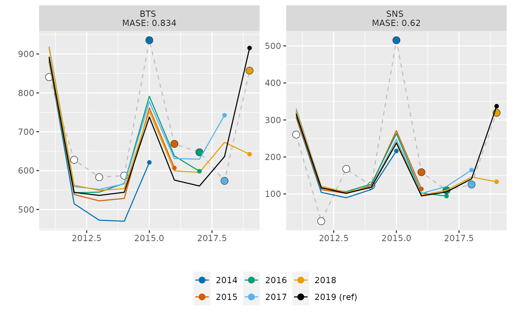
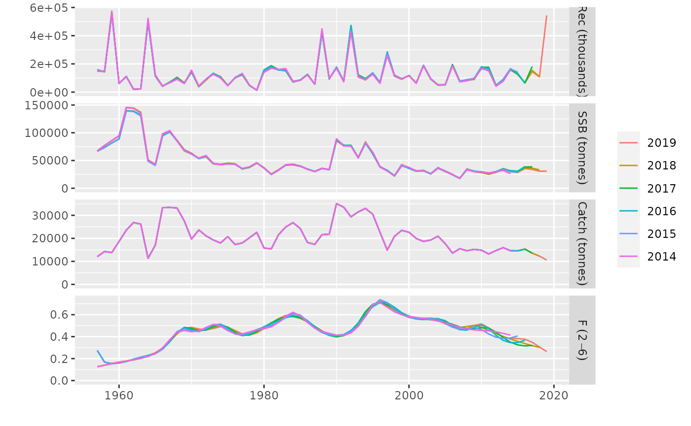

Model Diagnostics for FLa4a
Iago MOSQUEIRA (WMR)
Henning WINKER (EC JRC)
30 August, 2022
a4adiags.Rmda4adiags is an open-source R package that provides a number of extra diagnostics for a4a stock assessment models, complementary of those already availabel in FLa4a.
(Carvalho et al. 2020)
It makes use of the S4 classes and methods developed by the FLR project (http://flr-project.org/R, (Kell et al. 2007)), which simplify the development, testing and use of statistical and simulation models for fisheries management advice.
Diagnostics in FLa4a
Example model fit
library(a4adiags)
#> Loading required package: ggplot2
#> Loading required package: FLCore
#> Loading required package: lattice
#> Loading required package: iterators
#> FLCore (Version 2.6.19, packaged: 2022-08-30 08:56:21 UTC)
#> Loading required package: ggplotFL
#> Loading required package: FLa4a
#> This is FLa4a 1.8.3. For overview type 'help(package="FLa4a")'
library(FLa4a)
data("sol274")
# fmodel, mimics AAP
fmod <- ~te(replace(age, age > 8, 8), year, k = c(4, 22)) +
s(replace(age, age > 8, 8), k=4) +
s(year, k=22, by=as.numeric(age==1))
# qmodel (GAM, SNS)
qmod <- list(~s(age, k=3), ~s(age, k=3))
# vmodel (catch, GAM, SNS)
vmod <- list(
~s(age, k=3),
~s(age, k=3),
~s(age, k=3))
# srmodel
srmod <- ~factor(year)
# fit
fit <- sca(stock, indices[c("BTS", "SNS")],
srmodel=srmod, fmodel=fmod, qmodel=qmod, vmodel=vmod)Prediction skill by hindcasting cross-validation
library(doParallel)
ncores <- floor(detectCores() * .75)
if(Sys.info()["sysname"] %in% c("Darwin", "Linux")) {
registerDoParallel(ncores)
} else if(Sys.info()["sysname"] %in% c("Windows")) {
cl <- makeCluster(ncores)
clusterEvalQ(cl = cl, expr = { library(FLa4a); library(FLasher) })
registerDoParallel(cl)
}
xval <- a4ahcxval(stock, indices, nyears=5, nsq=3, srmodel=srmod, fmodel=fmod,
qmodel=qmod, vmodel=vmod)
#> Warning: executing %dopar% sequentially: no parallel backend registered
mase(indices, xval$indices[-1])
#> BTS SNS
#> 0.5348652 0.3346750
plotXval(xval$indices)
plotXval(indices, xval$indices)
plotXval(indices, xval$indices[-1])
plotXval(xval$indices[["data"]], xval$indices[-1])
plotXval(xval$indices[["data"]], xval$indices)
plot(xval$stocks)
mohnMatrix(xval$stocks, ssb)
#> base -1 -2 -3 -4 -5
#> 2012 28461.57 29929.70 30195.50 29562.62 30032.85 29890.79
#> 2013 34081.72 35438.76 35130.41 34567.14 34485.31 32003.08
#> 2014 30423.14 31066.62 31681.66 31191.75 29685.55 26325.81
#> 2015 28567.41 29542.76 30793.79 30899.53 28432.62 NA
#> 2016 35520.25 36475.95 38345.49 39220.43 NA NA
#> 2017 33901.84 36190.63 38558.82 NA NA NA
#> 2018 30749.29 33255.17 NA NA NA NA
#> 2019 30888.28 NA NA NA NA NA
icesAdvice::mohn(mohnMatrix(xval$stocks, ssb))
#> [1] 0.03672696
icesAdvice::mohn(mohnMatrix(xval$stocks, fbar))
#> [1] 0.003706067(???)
(???)

More information
- You can submit bug reports, questions or suggestions on
FLPKGat theFLPKGissue page.1 - Or send a pull request to https://github.com/flr/a4adiags/
- For more information on the FLR Project for Quantitative Fisheries Science in R, visit the FLR webpage.2
- The latest version of
a4diagscan always be installed using thedevtoolspackage, by calling
library(devtools)
install_github('flr/a4adiags')References
Carvalho, Felipe, Henning Winker, Dean Courtney, Maia Kapur, Laurence Kell, Massimiliano Cardinale, Michael Schirripa, et al. 2020. “A Cookbook for Using Model Diagnostics in Integrated Stock Assessments.” Fisheries Research, Accepted manuscript under revision.
Kell, L. T., I. Mosqueira, P. Grosjean, J-M. Fromentin, D. Garcia, R. Hillary, E. Jardim, et al. 2007. “FLR: An Open-Source Framework for the Evaluation and Development of Management Strategies.” ICES Journal of Marine Science 64 (4): 640–46. https://doi.org/10.1093/icesjms/fsm012.